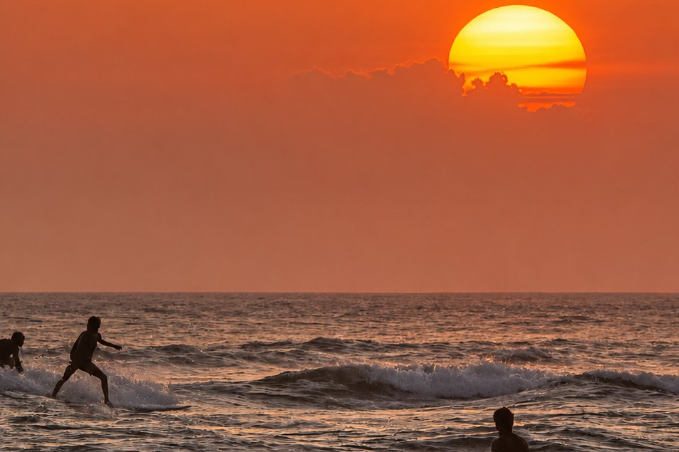
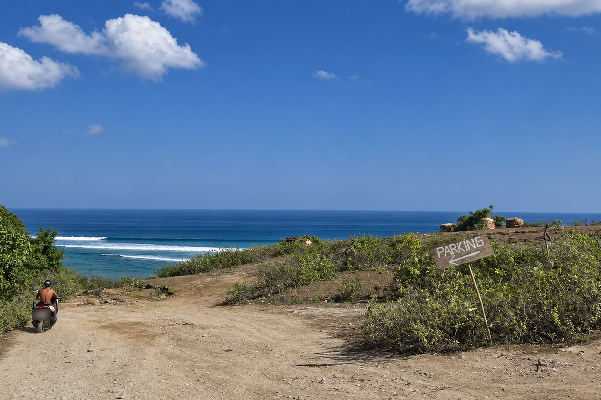

Stop 1 of 10
My trip · Stop 1
Thirty days in Canggu with no plan.
I showed up in Bali without a plan. Here’s every day of it: where I ate, what I did, what it cost, and what I’d do differently.

Duration
29 nights
Jul 1–30, 2026
Stay / night
$24.42
$708.14 ÷ 29 nights
Motorbike / day
$4.88
$131.79 ÷ 27 days
Fixed bookings
$1,677.13
stay + motorbike + flight in
01 / The experience
The short version.
Favorite restaurant
Ulekan
Best day
the Uluwatu day trip, Jul 5
Best night
FINNS Beach Club, then the G Swing, Jul 28
Biggest mistake
showing up with no plan
02 / How I structure my day
24 hours. Intentionally spent.
The daily structure I aim for, rather than a claim that every day follows it perfectly.
- Activity · 2h
- Meals · 2h
- Focus · 8h
- Entertainment · 4h
- Sleep · 8h
The focus
Temple Stuart
Product development, marketing, professional services, and building the tools I use to manage the trip.
The life
Beyond the laptop
Training, surf, cafes, local food, sunsets, social experiences, and exploring wherever I happen to be.
03 / Experienced firsthand
Places worth returning to.
My favorite discoveries from the stop. Real vendors, personal impressions, and the experiences that stood out.

Best day
the Uluwatu day trip, Jul 5
I’m already planning a trip back just for Uluwatu.
Photo: Alex Stuart
Favorite restaurant
- Ulekan
Breakfast and brunch
- Open House
- Fold (the cold brew)
- Revolver
- Cafe Coach (coconut cold brew)
- Cocomo (pricey, worth it)
- Kawisari Coffee Farm Shop & Eatery
- 7AM | 7PM
- Doppio Café
- Tiga
Dinner
- Papi Sapi Neighbourhood Grill, Uluwatu
- Smoke Bali
- ACME (the brisket sandwich)
- Yumei Noodles (hidden ramen)
- YUKI
Sunsets
- Times Beach Warung
- Echo Beach sunset point
- Warung Alus, Munggu Beach
- Jimmy Beach Cafe, Balangan
At night
- FINNS Beach Club
- The G Swing
- Shooters, Seminyak (mini golf and axe throwing)
Shopping
- Sundaze Uluwatu Market at Hatch
- beachwalk Shopping Center
- Bali Niki Art Market
Practical
- March Wash Laundry
- Pepito Market
- Nyoman Motorbike Rental
04 / Transparent spending
What it actually cost.
Verified booking figures from the travel log. Shared costs are allocated by stay duration; unrecorded daily expenses are not assumed to be zero.
Booking breakdown
Stay
The Daun
29 nights
$708.14
Motorbike
Nyoman Motorbike (Nmax)
27 days · Jul 3–30, 2026
$131.79
Flight in
China Air
$837.20
Fixed bookings total
Excludes meals, activities and other spending
$1,677.13
Also in my log
My next visa (Vietnam, for stop 2)
Expedited, because I applied late · standard is $25
$100.00
Daily cost allocation
$58.17 / day
Fixed bookings normalized over the 29-night stay; motorbike over its 27 rental days.
Stay $708.14 ÷ 29 nights
$24.42
Motorbike $131.79 ÷ 27 days
$4.88
Flight in $837.20 ÷ 29 nights
$28.87
The rest
These are the numbers in my log. The rest of the month’s spending isn’t in this post yet.
05 / Day by day
The daily journal.
Pick a day to see what happened, where I ate, and how the day actually unfolded.
Jul 1–30, 2026
30 days
Wed Jul 1 · Day 1 of 30
Week 1 · Jul 1–7, 2026 · Finding my feet
Landed in Bali around sunset and took a Grab to The Daun in Canggu. Really good price, amazing location. By the time I got there it was dark, so I walked next door to M Mart for water and called it a night.
Thu Jul 2 · Day 2 of 30
Week 1 · Jul 1–7, 2026 · Finding my feet
Walked across the street for breakfast at Negrita Cafe. No scooter yet. Found out US wall chargers don’t fit Indonesian outlets, so back to M Mart for an adapter. Walked down the road to check out ZIN Cafe and its gym, ZINFIT, then the beach to look at the surf schools and board rentals. A friend took me to Times Beach Warung for sunset dinner and drinks, and then we walked around Canggu so I could get my bearings. I’d suggested we walk. She said: OK, you want to walk, let’s walk, you’ll see. I saw.
Fri Jul 3 · Day 3 of 30
Week 1 · Jul 1–7, 2026 · Finding my feet
Up at 6 for breakfast, and I learned fast that Canggu is a 7:30–8am kind of town. Found Doppio Café: great food and a great look. At 9 the rental shop next to The Daun set me up with a scooter, and they do petrol fill-ups too. Spent the afternoon planning the trip, then rode with a friend to Ulekan for dinner, probably my favorite restaurant of the whole trip and where I found out how good Indonesian food really is. After dinner: Shooters, for mini golf and throwing axes at a wall.
Sat Jul 4 · Day 4 of 30
Week 1 · Jul 1–7, 2026 · Finding my feet
Rode around alone to learn Canggu. Breakfast at Tiga, very good. At 9 sharp a friend picked me up on her bike for beachwalk Shopping Center, since it’s far and she knows the shortcuts. She said I should practice in Bali traffic before I tried them or I’d slow us down. She was probably right. Bought a bunch of island-vibe clothes, came back, and spent the evening planning the activities I want to do and what they’ll cost.
Sun Jul 5 · Day 5 of 30
Week 1 · Jul 1–7, 2026 · Finding my feet
Cold brew at The Daun’s own café. Canggu has a real trend for good coffee. Then a friend and I rode out to Uluwatu for the day, and it’s amazing. I’m already planning a trip back just for Uluwatu. Lunch at Jimmy Beach Cafe on Balangan Beach with a front-row view of the left-hand reef break and super blue water. Then the Sundaze market at Hatch for a few tees and board shorts at a good price, a haircut at Cukuruku Barbershop while she was at her hair appointment, and dinner at Papi Sapi. Amazing. Uluwatu left a lasting impression on me.
Mon Jul 6 · Day 6 of 30
Week 1 · Jul 1–7, 2026 · Finding my feet
Slow morning, then brunch and more trip planning: what I’ll do each day. Sunset at Times Beach Warung with a friend, her cousin and another friend. Sunset dinner and drinks is basically a daily ritual in Bali. After that we all went to Berawa’s Kitchen to eat more, sit and talk. Caught up with a college friend in Jakarta about coming to visit.
Tue Jul 7 · Day 7 of 30
Week 1 · Jul 1–7, 2026 · Finding my feet
Filled up the scooter and learned it’s called petrol here. Call it gas and people look at you like an alien. Then a whole day at the café planning the trip ahead. Didn’t do much else.
Wed Jul 8 · Day 8 of 30
Week 2 · Jul 8–14, 2026 · Sick, then sunsets
Surfed for an hour on a board from My Mate Surf, then breakfast on the beach at Manta the Oasis with a view of the surfers. Later that day I had every symptom of dengue. Not great, but there was no way I was missing a minute of Bali, so I pushed through. Dinner with a new friend at La Baruna, the beachfront restaurant in Pererenan, then a walk through the streets and the Bali Niki Art Market looking for board shorts.
Thu Jul 9 · Day 9 of 30
Week 2 · Jul 8–14, 2026 · Sick, then sunsets
Really feeling it today: totally fine until I eat, then 20–30 minutes of feeling awful, and low energy all day. Dropped my laundry with the hotel staff and tested breakfast at Negrita Cafe. Same thing. Spent most of the day in bed. Felt better by evening, so I picked up a friend on the scooter for ramen at Chotto Motto in Seseh, and my stomach hit again right after. Ice cream was a struggle. She told me to try coconut water, so I took one home.
Fri Jul 10 · Day 10 of 30
Week 2 · Jul 8–14, 2026 · Sick, then sunsets
Finally feeling better. It only lasted a few days. Lay in the sun outside my room, did push-ups, squats and crunches, then spent the day at the café still trying to plan the whole trip. I left with no clear plan, so I keep sitting around trying to figure out how to plan the things I want to do.
Sat Jul 11 · Day 11 of 30
Week 2 · Jul 8–14, 2026 · Sick, then sunsets
Laundry came back after two days: washed, folded, vacuum-sealed and smelling amazing. Straight into the suitcase. Brunch at Open House with a new friend. Amazing food and good vibes, one of my favorites. Sunset drinks at Warung Alus on Munggu Beach with kites all over the sky, a super beautiful spot. Custom frozen yogurt at MIYO for dessert, then home after a long day exploring.
Sun Jul 12 · Day 12 of 30
Week 2 · Jul 8–14, 2026 · Sick, then sunsets
Morning at the café sorting out what activities and entertainment I want to do, when, and what they’ll cost, in a way that’s clear to me. Dinner with a friend: appetizers at YUKI, which were amazing, then she took me to a local spot with authentic Indonesian food, better prices, and money that stays in the community. I wish I knew its name. Drove around looking at the villas I could have rented, then home.
Mon Jul 13 · Day 13 of 30
Week 2 · Jul 8–14, 2026 · Sick, then sunsets
More planning, more budgeting, more time sitting and suffering because I didn’t plan this trip before I left. Then another haircut, at Dirty Sanchez. Then a night at Alex Villas, since I’m thinking about coming back to Bali and wanted to see what a nicer villa is like. Super nice. A friend came over, we had manicures, pedicures and massages come to us, ordered sushi on Grab and watched movies. Had a blast.
Tue Jul 14 · Day 14 of 30
Week 2 · Jul 8–14, 2026 · Sick, then sunsets
Week two done. Duck and spicy rice on Grab for breakfast, snacks and water from Pepito Market for my room, dropped my friend home, then the café until close, sorting out a trip to Jakarta.
Wed Jul 15 · Day 15 of 30
Week 3 · Jul 15–21, 2026 · The gym, a Jakarta detour, and a new café
Breakfast at the café, then my first workout of the trip on a day pass at ZINFIT, the gym upstairs. First time lifting in kilos: I almost died putting 225 on the bench thinking it was 135. A Grab to beachwalk Shopping Center to meet a friend, sushi at Genki Sushi, a few hours walking around, then back to hang by the pool with the staff where I’m staying.
Thu Jul 16 · Day 16 of 30
Week 3 · Jul 15–21, 2026 · The gym, a Jakarta detour, and a new café
Making plans for two days in Jakarta, hoping to see a college buddy. Day two at the gym, and pretty sore after. Home early.
Fri Jul 17 · Day 17 of 30
Week 3 · Jul 15–21, 2026 · The gym, a Jakarta detour, and a new café
Breakfast at the café, then a Grab to the airport with a friend and a flight to Jakarta. Checked into the Shangri-La. My college buddy had gone to Singapore for the weekend, so we missed each other. We met my friend’s friends at a club, and I love that clubs in Asia are restaurants and clubs at once, because I’m an old man and I like to sit and eat when I drink. Pretty good night.
Sat Jul 18 · Day 18 of 30
Week 3 · Jul 15–21, 2026 · The gym, a Jakarta detour, and a new café
Breakfast at the hotel’s restaurant downstairs, then a three-hour Grab to Serang in Banten with my friend. Checked into the Aston and took it easy. That was the day.
Sun Jul 19 · Day 19 of 30
Week 3 · Jul 15–21, 2026 · The gym, a Jakarta detour, and a new café
Breakfast at the hotel, a ride back to Jakarta, a flight to Bali, more driving. A travel day. Home around 9:30pm, dinner on Grab in bed and movies.
Mon Jul 20 · Day 20 of 30
Week 3 · Jul 15–21, 2026 · The gym, a Jakarta detour, and a new café
The whole day at the café getting the trip better laid out. Brunch there, dinner there, home to sleep.
Tue Jul 21 · Day 21 of 30
Week 3 · Jul 15–21, 2026 · The gym, a Jakarta detour, and a new café
Realized I’d been eating at the same café way too much, so I tried Fold, and I’m really happy I did: amazing food and cold brew. Dinner on a rooftop watching the sunset.
Wed Jul 22 · Day 22 of 30
Week 4 · Jul 22–30, 2026 · The best food of the trip, then goodbye
Breakfast at Revolver, which three people had told me to try, and now I see why. Another rooftop dinner at sunset.
Thu Jul 23 · Day 23 of 30
Week 4 · Jul 22–30, 2026 · The best food of the trip, then goodbye
Cafe Coach for breakfast. Amazing food again, and a coconut cold brew that was so, so good. Bali has a ton of good restaurants.
Fri Jul 24 · Day 24 of 30
Week 4 · Jul 22–30, 2026 · The best food of the trip, then goodbye
Brunch at Cocomo: pricey, but wow, that food was amazing. Dropped my laundry at March Wash for wash-and-fold: same day, faster, and half the price of having the hotel do it. Planned the trip while I waited, picked it up, then dinner on Grab and movies in bed.
Sat Jul 25 · Day 25 of 30
Week 4 · Jul 22–30, 2026 · The best food of the trip, then goodbye
Brunch at Two Face. I had plans for a wild adventure, but a pretty cool guy started talking and we sat there five hours. Caught the sunset at the beach, then a new friend messaged me on Instagram about dinner. Better than nothing! We got ramen at Yumei Noodles, right next to where I’m staying and hidden off the street. I never knew it was there.
Sun Jul 26 · Day 26 of 30
Week 4 · Jul 22–30, 2026 · The best food of the trip, then goodbye
Brunch with the same friend at Kawisari Coffee Farm Shop & Eatery. So good. We left the bikes there and walked Echo Beach up to the sunset point, then Smoke Bali for American BBQ. Two hits in one day. Walked back to the bikes and rode home.
Mon Jul 27 · Day 27 of 30
Week 4 · Jul 22–30, 2026 · The best food of the trip, then goodbye
Authentic Indonesian breakfast at Warung Varuna, on a friend’s suggestion. Then planning stop 2: I hadn’t even booked my hotel in Da Nang yet, so I booked it today on Airbnb. I also applied for my Vietnam visa at the last minute. I was supposed to do it three weeks ahead, and paid $100 for an expedited service instead of $25. Dinner with a friend at ACME, which I can’t believe I hadn’t tried. The brisket sandwich is super good. At least I tried it before it was time to go.
Tue Jul 28 · Day 28 of 30
Week 4 · Jul 22–30, 2026 · The best food of the trip, then goodbye
Brunch with a friend at 7AM | 7PM. Lots of hype, and I see why. Walked to Pererenan Beach to see the Gajah Mina statue, then along to Echo Beach to watch the surfers and the sunset, and back for the bikes. Ramen at Ramen Hamatora because I kept seeing Naruto on the sign, and it was good. Then, finally, FINNS Beach Club, and it was sick. I’m old and sick of clubs, but this one excited me. Then the G Swing to wrap up the day.
Wed Jul 29 · Day 29 of 30
Week 4 · Jul 22–30, 2026 · The best food of the trip, then goodbye
My last full day in Bali, and I’m sad. Laundry to March Wash so I’d pack clean clothes, brunch at BAKED while I caught up with a buddy back home on FaceTime, then cleaned my room so the staff wouldn’t have much to do after I left. Packed, unpacked and repacked. I always get paranoid I’ll leave something behind. Dinner at KYND Community: I’m not vegan and didn’t know it was a vegan place, but I didn’t want to be rude and leave, and honestly I enjoyed it.
Thu Jul 30 · Day 30 of 30
Week 4 · Jul 22–30, 2026 · The best food of the trip, then goodbye
Returned the scooter, walked to ACME for one more brisket sandwich, and took a Grab to the airport. Sad the whole ride, and a little excited for the next stop. Then I got a little tipsy at the airport bar and missed my flight. It was the last day of my visa, so I bought a new ticket to Hanoi for a night and decided to have a good time with my mistake. More on that in stop 2.
06 / What I would tell someone going
What I learned the hard way.
Plan before you land.
I left with no clear plan and spent too many days at a café trying to figure out what to do, when, and what it would cost.
Get a scooter on day one.
I suggested we walk. We walked. You need a bike in Canggu.
Pack a plug adapter.
US chargers don’t fit Indonesian outlets.
Canggu wakes up around 7:30–8am.
I was out at 6 looking for breakfast.
It’s petrol.
Call it gas and people look at you like an alien.
Wear repellent.
One mosquito bite and I had every symptom of dengue for a few days.
Use a wash-and-fold shop.
Same day, and half the price of the hotel’s laundry.
Apply for your next visa three weeks out.
I paid $100 for an expedited one instead of $25.
Skip the airport bar.
I got tipsy, missed my flight, and spent a night in Hanoi.
Give Uluwatu its own trip.
One day there wasn’t enough.
The big takeaway
Plan before you land.
07 / While I was there
What was on while I was there.
Jun 13 – Jul 11, 2026 · took place · reported by Antara
Pesta Kesenian Bali XLVIII (Bali Arts Festival)
Taman Werdhi Budaya Art Centre
Jul 21, 2026 · took place · per Rip Curl Indonesia
Rip Curl Cup Padang Padang 2026 — women's local trials
Padang Padang Beach
Jul 23–26, 2026 · took place · reported by Antara Bali
Rare Angon International Kite Festival 2026
Mertasari Beach
Going to Canggu, Bali? Book the stay and the flight here.
Book the stay and the flightWritten Nov 5, 2026